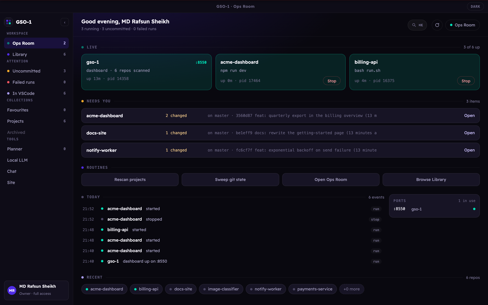
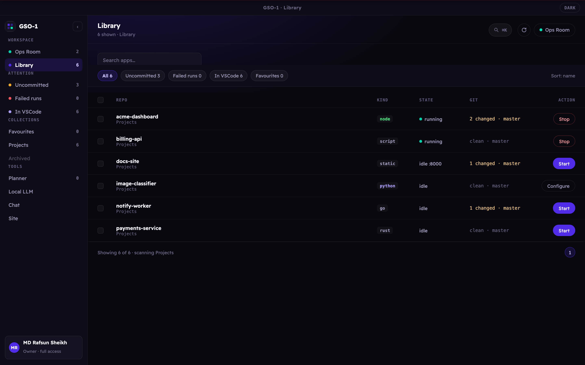
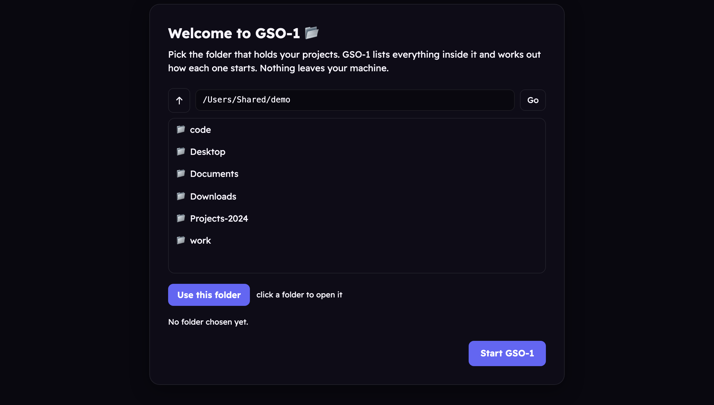
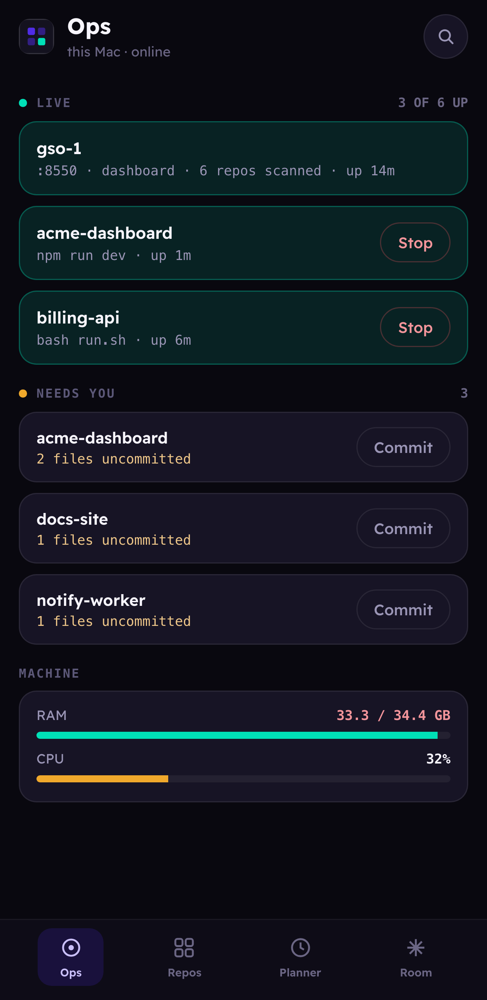

The staff officer for your machine.
Every project you own, running, healthy, and one click from started. Your computer is your garrison. You are its commander. This does the staff work.
macOS · Windows · Linux: Apache 2.0, nothing leaves your machine
In a division headquarters there is an officer called the GSO-1, General Staff Officer Grade 1, a Lieutenant Colonel who heads the General Staff branch. He is the right hand of the GOC, the General Officer Commanding the division. He plans the operations, keeps the picture current, and drafts the orders the GOC signs. In peace and in war, the division runs through him.
He works from the Ops Room, the nerve centre where the maps, the traces, the unit locations, the strengths and the intelligence are displayed and kept up to date. It is where the commander is briefed, and where decisions get made, because it is the one place the whole situation can actually be seen.
You decide what gets built and what ships. You should not also be remembering which of thirty services is currently up.
→ GOC · your garrisonFinds every project, works out how each one starts, watches its health, and keeps the git picture current. Quietly.
→ the staff officerOne screen holding the whole situation: what is live, what is dirty, what crashed, what is holding a port.
→ where you decideThe old British staff manuals are unusually clear about this, and it turns out to be a decent product specification.
npm run dev from memory again.



Detects the run command for Node, Django, FastAPI, Flask, Streamlit, Rust, Go, static
sites and plain Python: and always defers to a project's own run.sh or
Makefile.
Healthy, starting, crashed or stopped, from process tracking plus a port probe, not from hope.
Finds what is already holding the port before you launch, instead of after the stack trace.
Branch, dirty count, ahead/behind and last commit across every repo, with fast-forward updates from the dashboard.
Read-only tools run themselves; anything that writes a file or runs a command stops for an explicit approval.
Project folders, Telegram, your local model and phone access are all set from a Settings screen inside the app. Environment variables still win, and show as read-only when they do.
A built-in Anthropic→llama proxy points an agent session at your local
llama-server. How the Ops Room works →
| Platform | Download {{VERSION}} |
|---|---|
| macOS (Apple Silicon) |
GSO-1-{{VER}}-arm64.dmg |
| macOS (Intel) |
GSO-1-{{VER}}.dmg |
| Windows |
GSO-1.Setup.{{VER}}.exe |
| Linux |
.AppImage ·
.deb |
Checksums for every file are in
SHA256SUMS.txt.
Older versions are on the releases page.
On first run GSO-1 asks which folder holds your projects. That is the whole setup, no Python, no terminal, no config file.
GSO-1 is signed ad-hoc rather than with a paid Apple Developer ID, so macOS blocks the first launch with "Apple could not verify GSO-1 is free of malware". Right-click and Open no longer works on these versions, and that dialog only offers Done and Move to Bin. Instead:
It only happens once. On Windows, SmartScreen needs "More info" then "Run anyway".
# requires Python 3.11+
git clone https://github.com/rafsunsheikh/gso-1.git
cd gso-1
cp .env.example .env
./run.sh
GSO-1 starts processes and runs commands as you. That is the feature, and it is also the threat model.
Loopback only by default, unreachable from your network. Remote access is refused outright unless you set a token, and agent writes and commands require explicit approval. Full detail in the security policy.